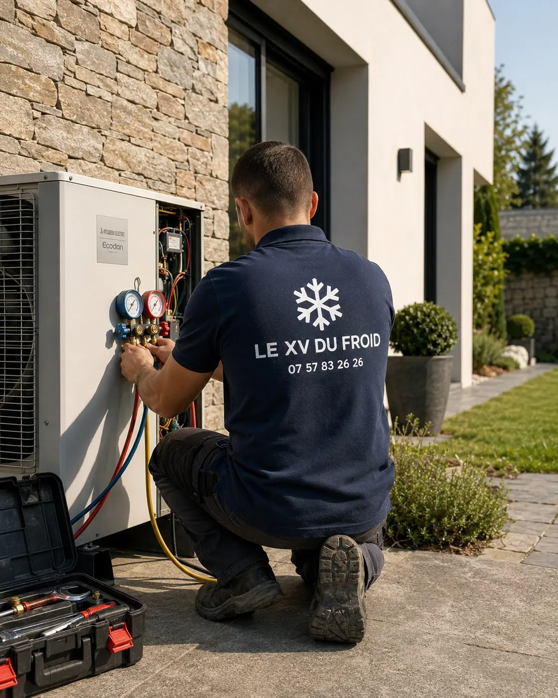

Louveciennes · 78430 · groupe d’accès difficile
Urgence climatisation Louveciennes : quand le groupe est au fond du jardin, en bas d’un escalier.
À Louveciennes, les jardins montent, descendent, se terminent par un escalier de pierre. Le groupe de climatisation se retrouve parfois à l’autre bout du terrain. Quand la panne survient un soir ou un week-end, on se demande comment aller le voir sans se blesser et comment faciliter notre venue.
- Couper sans aller au groupe si l’accès est risqué
- Dégager et éclairer le chemin pour le technicien
- Ce que nous promettons, et ce que nous ne promettons pas

Accès difficile
Le plus urgent est de ne pas se blesser.
Une panne de clim n’est jamais une raison de descendre un escalier mouillé à la nuit tombée. Le groupe extérieur ne se répare pas par le propriétaire, et le courant se coupe à l’intérieur, au tableau, pas dehors.
Les gens qui nous appellent pour une urgence climatisation Louveciennes décrivent souvent un groupe qu’on n’atteint qu’avec une échelle, un portillon, un chemin de terre ou un escalier sans rampe. Ces détails comptent : ils décident de ce que nous apportons et du temps qu’il nous faut.
Voici l’ordre des gestes, et ce qu’il vaut mieux préparer avant notre arrivée.
Les premiers gestes
Couper depuis la maison, jamais depuis le jardin
Éteignez l’appareil à la télécommande, puis coupez le disjoncteur qui lui est réservé dans le tableau. Cela suffit à mettre le groupe hors tension, sans que vous ayez à sortir.
Si vous voyez de l’eau, de la fumée ou si vous sentez une odeur de brûlé à l’intérieur, ne rallumez pas, quel que soit l’état de la maison. Notez simplement ce que vous avez vu : c’est ce que nous demanderons au téléphone.

Ce que vous pouvez faire en nous attendant
Ouvrez le portail ou le portillon, dégagez le chemin vers le groupe, rangez ce qui traîne, et allumez l’éclairage extérieur s’il y en a. Un technicien qui porte des outils lourds a besoin d’un passage net.
Indiquez-nous si l’accès se fait par un escalier, un sentier, une pente ou une porte étroite. Nous adaptons notre matériel : échelle, éclairage, accès à pied ou non.
- Portail ouvert, chemin dégagé
- Éclairage extérieur allumé
- Chiens et animaux à l’intérieur
- Accès décrit au téléphone
Urgent ou non
Ce qui ne peut pas attendre, et ce qui peut
Nous préférons être clairs : une panne de clim n’est pas toujours une urgence.
- Odeur de brûlé, fumée, étincelle : coupez au tableau, ne rallumez pas, appelez.
- Eau qui coule sur un meuble ou un plafond : coupez, protégez, appelez, c’est un dégât en cours.
- Disjoncteur qui saute à chaque démarrage : ne forcez pas, appelez.
- Souffle tiède sans autre signe : ça peut attendre le lendemain, après les contrôles de base.
- Bruit léger mais régulier : à signaler, rarement à traiter dans l’heure.
Honnêteté sur les délais
Ce que nous pouvons promettre
Nous faisons au plus vite. Pour un depannage climatisation urgence Louveciennes, appelez le matin pour un créneau rapide, c’est à ce moment que nous organisons les tournées de la journée.
Nous ne promettons pas d’horaire que nous ne pourrions pas tenir. Si une pièce est à commander, nous le disons dès le diagnostic, avec le délai probable et sans engagement chiffré avant d’avoir vérifié.
Notre avis
Quand on peut éviter l’intervention en urgence
Une fois sur trois environ, ce qui ressemble à une urgence se règle avec un filtre propre, un disjoncteur remis ou un mode corrigé. Nous préférons vous guider au téléphone plutôt que vous faire attendre pour rien.
Si le problème est réel, nous savons au moins ce que nous venons chercher, et vous gagnez du temps.
Nous ne rechargeons pas en gaz sans chercher la fuite, même en urgence : la charge repart sans réparation.
Questions
Urgence climatisation à Louveciennes : vos questions
Je ne peux pas atteindre mon groupe en sécurité, que faire ?
Coupez depuis le tableau électrique à l’intérieur. Le groupe n’a pas besoin d’être touché pour être mis hors tension.
Dois-je aller voir le groupe quand il y a un bruit ?
Non. Éteignez l’appareil, et décrivez-nous le bruit : sa nature nous dit déjà beaucoup.
Venez-vous le soir ou le week-end ?
Appelez-nous : nous disons honnêtement ce qui est possible ce jour-là, sans promesse d’horaire que nous ne pourrions pas tenir.
Que dois-je préparer avant votre venue ?
Un chemin dégagé, un éclairage, les animaux à l’intérieur, et une description de l’accès.
De l’eau coule dans la maison, quelle priorité ?
Couper l’appareil et le disjoncteur, poser un récipient, protéger ce qui peut l’être, puis appeler.
Dois-je être présent pendant l’intervention ?
Oui, ou une personne que vous mandatez, pour l’accès et la validation du diagnostic.
Dans votre ville
Les autres services à Louveciennes
Un besoin différent, une page différente : dépannage, entretien, installation ou urgence.
- Installation climatisation Louveciennes : pompe à chaleur air-air pour chauffer une maison ancienne
- Dépannage climatisation Louveciennes : maison ancienne en pierre, liaisons et groupe discret
- Entretien climatisation Louveciennes : jardin arboré, pollen, résine et insectes
- Climatisation dans les Yvelines (78) : installation, dépannage, entretien, urgence
Autour de chez vous
Urgence de climatisation dans les villes voisines
Si vous êtes à la limite de deux communes, lisez aussi la page d’à côté.
- Urgence climatisation La Celle-Saint-Cloud : pourquoi le devis passe avant le tournevis
- Urgence climatisation Marly-le-Roi : une intervention racontée minute par minute
- Urgence climatisation Le Chesnay-Rocquencourt : en vague de chaleur, ce qui est faisable
- Urgence climatisation Saint-Germain-en-Laye : odeur de brûlé, couper et ne pas rallumer
- Urgence climatisation Le Pecq : panne quand vous n’êtes pas chez vous
- Urgence climatisation Versailles : panne en pleine chaleur, les premiers gestes
- Urgence climatisation Le Vésinet : panne après un orage ou une coupure
- Urgence climatisation Viroflay : clim neuve en panne, garantie et premiers réflexes
- Urgence climatisation Croissy-sur-Seine : télétravail et chaleur à la maison
À côté
D’autres besoins dans les communes voisines
Chaque ville a ses pages.
Nos services
Aller plus loin sur la climatisation
Les pages du site qui complètent celle-ci : services, guides pratiques et devis.
- Dépannage climatisation en Île-de-France
- Installation de climatisation : split, gainable, monobloc
- Entretien de climatisation et de clim réversible
- Demander un devis climatisation gratuit
- Toutes nos zones d’intervention
- L’entretien de la climatisation est-il obligatoire ?
- Quelle puissance de climatisation choisir ?
Où on intervient
Louveciennes et les communes proches
Le village, les rues en pente, les résidences et les propriétés avec grand jardin, ainsi que Marly-le-Roi, La Celle-Saint-Cloud, Bougival, Le Pecq et Le Port-Marly.
Signaler une urgence à LouveciennesÀ lire aussi
Autour de Louveciennes
Pages voisines : urgence Marly-le-Roi, urgence La Celle-Saint-Cloud.
Transparence
Un devis clair avant toute intervention.
Vous savez ce qui est prévu, pourquoi c’est nécessaire et à quel tarif avant que le technicien commence. Puis contrôles et essais avant son départ.